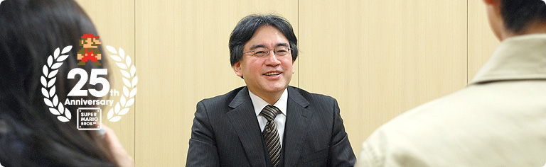
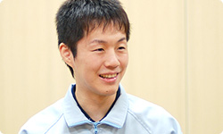

### 「スーパーマリオ２５周年」

<DIV ID="volbox-5"><P CLASS="volnum1"><A CLASS="btn-volnum1" TITLE="社長の代わりに糸井重里さんが訊く" HREF="../vol1/index.html">社長の代わりに糸井重里さんが訊く
<P CLASS="volnum2"><A CLASS="btn-volnum2" TITLE="ファミコンとマリオ 篇" HREF="../vol2/index.html">ファミコンとマリオ 篇
<P CLASS="volnum3"><A CLASS="btn-volnum3" TITLE="『スーパーマリオ』シリーズ開発経験者 篇 その１" HREF="../vol3/index.html">『スーパーマリオ』シリーズ開発経験者 篇 その１
<P CLASS="volnum4"><A CLASS="btn-volnum4s" TITLE="『スーパーマリオ』シリーズ開発経験者 篇 その２">『スーパーマリオ』シリーズ開発経験者 篇 その２
<P CLASS="volnum5"><A CLASS="btn-volnum5" TITLE="『スーパーマリオ』生みの親たち 篇" HREF="../vol5/index.html">『スーパーマリオ』生みの親たち 篇

<DIV ID="main-visual">
<H2>
<DIV ID="pagebox-wrap">
<DIV CLASS="pagebox">
<P CLASS="pagenum"><A HREF="index.html">1. １９８０年代生まれ、それぞれの『マリオ』体験
<P CLASS="pagenum"><A HREF="index2.html">2. 「近所のお兄ちゃん」に教えられて
<P CLASS="pagenum"><A HREF="index3.html">3. 遊び手からつくり手に変わって
<P CLASS="pagenums"><A>4. 「任天堂に入りたい」
<P CLASS="pagenum"><A HREF="index5.html">5. ２５年経っても変わらないこと
<P CLASS="pagenum"><A HREF="index6.html">6. 『マリオ』の遊び方とつくり方

<DIV>

<DIV ID="int-box-wrap">
<H3>
<DIV CLASS="int-box"><DIV CLASS="int-name"><P>岩田
<DIV CLASS="int-text"><P>吉田さんがゲームのつくり手になろうと思った<br>キッカケはどんなことでしたか？
<DIV CLASS="clear"><DIV CLASS="int-box"><DIV CLASS="int-name"><P>吉田
<DIV CLASS="int-text"><P>先ほど兄の部屋に忍び込んだ話をしましたけど、<br>わたしには弟もいて、<br><SCRIPT LANGUAGE="JavaScript" TYPE="text/javascript">
<!--
	document.write('<A HREF="player.html?mv=movie007&amp;width=320&amp;height=280&amp;id=movie007" CLASS="thickbox movie007" TITLE="『マリオブラザーズ』の２人対戦"><SPAN>『マリオブラザーズ』<sup>（※15）</sup><'+'/SUP>の２人対戦<'+'/SPAN><'+'/A>');
//-->
</SCRIPT><NOSCRIPT><A HREF="movie/movie007.jpg"><SPAN>『マリオブラザーズ』<sup>（※15）</sup>の２人対戦</SPAN></NOSCRIPT>で<br>いつもいっしょに遊んでいたんです。<br>で、弟と対戦していると、いつも負けるんです。<br>弟のほうがだんぜんゲームがうまかったんです。
<DIV CLASS="notes-box"><DIV CLASS="notes-num"><P>※15
<DIV CLASS="notes-text"><P>『マリオブラザーズ』＝１９８３年にアーケード版が登場し、同年９月にファミコン版が発売されたアクション<br>ゲーム。
<DIV CLASS="clear">
<DIV CLASS="clear">

<DIV CLASS="clear">
<DIV CLASS="clear"><DIV CLASS="int-box"><DIV CLASS="int-name"><P>岩田
<DIV CLASS="int-text"><P>でも、一般的にいって、<br>弟はなかなかお兄ちゃんに勝てないものですよね。<br>小さな頃というのは、わずかな年齢差でもすごい差ですから。
<DIV CLASS="clear"><DIV CLASS="int-box"><DIV CLASS="int-name"><P>吉田
<DIV CLASS="int-text"><P>ふつうはそうだと思うんですけど、<br>弟のほうが僕よりも学校の授業が早く終わるので、<br>先に帰って兄の部屋に忍び込んでいたんです。
<DIV CLASS="clear"><DIV CLASS="int-box"><DIV CLASS="int-name"><P>一同
<DIV CLASS="int-text"><P>（笑）
<DIV CLASS="clear"><DIV CLASS="int-box"><DIV CLASS="int-name"><P>岩田
<DIV CLASS="int-text"><P>吉田さんが後からお兄さんの部屋に忍び込んだときには、<br>弟さんがすでにトレーニングをたっぷり積んでいた、<br>ということですか（笑）。
<DIV CLASS="clear"><DIV CLASS="int-box"><DIV CLASS="int-name"><P>吉田
<DIV CLASS="int-text"><P>はい。ですからいつも弟に負かされていたんです。<br>しかも、兄が帰ってくると「ふたりとも出ていけ！」<br>と言われてしまいますし（笑）。
<DIV CLASS="clear"><DIV CLASS="int-box"><DIV CLASS="int-name"><P>岩田
<DIV CLASS="int-text"><P>あははは（笑）。
<DIV CLASS="clear"><DIV CLASS="int-box"><DIV CLASS="int-name"><P>吉田
<DIV CLASS="int-text"><P>弟に勝とうと思ってもなかなか勝てないですし、<br>そこで僕が制作者側になれば、弟がクリアできないような<br>難しいコースもつくれるんじゃないかと<br>思うようになったんです。
<DIV CLASS="clear"><DIV CLASS="int-box"><DIV CLASS="int-name"><P>岩田
<DIV CLASS="int-text"><P>へえ〜、それは面白い発想ですね（笑）。
<DIV CLASS="clear"><DIV CLASS="int-box"><DIV CLASS="int-name"><P>吉田
<DIV CLASS="int-text"><P>そこで、子どもながらにいろいろ考えて、<br>買ってきた方眼紙にゲームのコースや<br>ＲＰＧのマップを描くようなことをはじめました。<br>あと、ＲＰＧが自作できる『ＲＰＧツクール』<sup>（※16）</sup>が発売されたときは、<br>それを買ってきて自分のゲームをつくってみたりもしました。
<DIV CLASS="notes-box"><DIV CLASS="notes-num"><P>※16
<DIV CLASS="notes-text"><P>『ＲＰＧツクール』＝株式会社エンターブレインから発売されているＲＰＧを自作できるソフト。シリーズはＰＣ版をはじめスーパーファミコン版やＤＳ版など多数発売されている。
<DIV CLASS="clear">
<DIV CLASS="clear">

<DIV CLASS="clear">
<DIV CLASS="clear"><DIV CLASS="int-box"><DIV CLASS="int-name"><P>岩田
<DIV CLASS="int-text"><P>自作のゲームで弟さんをぎゃふんと言わせたかったんですか。
<DIV CLASS="clear"><DIV CLASS="int-box"><DIV CLASS="int-name"><P>吉田
<DIV CLASS="int-text"><P>はい。でも弟は遊んでくれなかったんですよ・・・。<br>せっかく弟のためにつくったのに。
<DIV CLASS="clear"><DIV CLASS="img-photo">
<DIV CLASS="int-box"><DIV CLASS="int-name"><P>岩田
<DIV CLASS="int-text"><P>あらら（笑）。
<DIV CLASS="clear"><DIV CLASS="int-box"><DIV CLASS="int-name"><P>吉田
<DIV CLASS="int-text"><P>だから仕方ないので、僕の友人に渡して<br>「これ、頑張ってつくったので、やってみてくれ」<br>と頼んだりしました。その後で友だちから<br>「すごくよかったよ」と言ってもらえたときは、<br>本当にうれしかったです。
<DIV CLASS="clear"><DIV CLASS="int-box"><DIV CLASS="int-name"><P>岩田
<DIV CLASS="int-text"><P>そもそもゲームって、遊ぶのはもちろん面白いんですけど、<br>つくる喜びに目覚めると、<br>遊ぶ喜びとはまた違う、格別な喜びがあるんですよ。
<DIV CLASS="clear"><DIV CLASS="int-box"><DIV CLASS="int-name"><P>吉田
<DIV CLASS="int-text"><P>はい。そのときにすごく実感しました。<br>友だちがプレイするのを後ろから見ていて<br>「あ、やっぱりここで引っかかってる」とか・・・。
<DIV CLASS="clear"><DIV CLASS="int-box"><DIV CLASS="int-name"><P>岩田
<DIV CLASS="int-text"><P>（笑）。そのときに感動を味わったので<br>つくり手になりたいと思うようになったんですか？
<DIV CLASS="clear"><DIV CLASS="int-box"><DIV CLASS="int-name"><P>吉田
<DIV CLASS="int-text"><P>はい。ただ、もちろんそれもあるんですけど、<br>もうひとつ大きなキッカケになったのは、<br>僕が通っていた小学校にコンピュータールームがあって、<br>自分でプログラムを書いて<br>絵を表示させる授業があったんです。<br>そのときに初めて、自分でプログラムしたものが<br>画面に表示されるというのを経験して、<br>「僕にもゲームがつくれそうだ」と。<br>そのとき小学４年生だったんですけど、本気で<br>「ゲームをつくりたい」と思うようになりました。
<DIV CLASS="clear"><DIV CLASS="int-box"><DIV CLASS="int-name"><P>岩田
<DIV CLASS="int-text"><P>松浦さんがつくり手になりたいと思った<br>キッカケは何だったんですか？
<DIV CLASS="clear"><DIV CLASS="int-box"><DIV CLASS="int-name"><P>松浦
<DIV CLASS="int-text"><P>中学１年のときに『マリオ６４』を買ってもらって、<br>それがめちゃくちゃ面白かったので<br>「任天堂に入りたい」と思ったんですけど、<br>先ほど吉田さんが「小学４年生」と言われたので・・・。
<DIV CLASS="clear"><DIV CLASS="int-box"><DIV CLASS="int-name"><P>岩田
<DIV CLASS="int-text"><P>上には上がいるなということですか（笑）。
<DIV CLASS="clear"><DIV CLASS="int-box"><DIV CLASS="int-name"><P>松浦
<DIV CLASS="int-text"><P>はい、負けました（笑）。<br>もともと僕は国語が得意で、数学は苦手だったんです。<br>それでも理系に進んで、プログラマーになりたいと<br>中１のときに思ったんです。<br>というのも、中学生の知識ではゲームをつくる人というのは<br>プログラマーしか思い浮かばなかったんです。<br>デザイナーの存在も頭から抜けていて、<br>すべてプログラマーがつくっているものだと思っていましたから。
<DIV CLASS="clear"><DIV CLASS="int-box"><DIV CLASS="int-name"><P>吉田
<DIV CLASS="int-text"><P>あ、僕もそう思っていました。
<DIV CLASS="clear"><DIV CLASS="int-box"><DIV CLASS="int-name"><P>岩田
<DIV CLASS="int-text"><P>いや、大昔はそういう時代もあったんですけどね（笑）。
<DIV CLASS="clear"><DIV CLASS="int-box"><DIV CLASS="int-name"><P>松浦
<DIV CLASS="int-text"><P>それで、プログラマーになるための勉強をして<br>任天堂に入ることができたんですけど、<br>最初は天野さんと同じようにマリオクラブに出向して、<br>デバッグの仕事にかかわりました。<br>もともとプログラムの知識があったので<br>バグが発生しそうな場所がなんとなくわかったりして、<br>自分に合ってる仕事だと思いました。
<DIV CLASS="clear"><DIV CLASS="img-photo">
<DIV CLASS="int-box"><DIV CLASS="int-name"><P>岩田
<DIV CLASS="int-text"><P>原理がわかっているのでイメージできるんですね。
<DIV CLASS="clear"><DIV CLASS="int-box"><DIV CLASS="int-name"><P>松浦
<DIV CLASS="int-text"><P>はい。たとえば、マリオが小さくなったマメマリオがいて、<br>そのマメマリオで、全コースを遊んでみるとどうなるんだろうとか。<br>試しに遊んでみると、大きなキノコがつながっているコースがあって、<br>そのキノコの間にはすき間はないんですけど、<br>走っていたらスッと下に落ちたりして。
<DIV CLASS="clear"><DIV CLASS="int-box"><DIV CLASS="int-name"><P>岩田
<DIV CLASS="int-text"><P>ちっちゃいからすき間をすり抜けてしまうんですね。
<DIV CLASS="clear"><DIV CLASS="int-box"><DIV CLASS="int-name"><P>松浦
<DIV CLASS="int-text"><P>そうなんです。で、そのような仕事をしているうちに、<br>マメマリオでふだんはやらないコースを遊べば<br><SCRIPT LANGUAGE="JavaScript" TYPE="text/javascript">
<!--
	document.write('<A HREF="player.html?mv=movie008&amp;width=384&amp;height=256&amp;id=movie008" CLASS="thickbox movie008" TITLE="マメマリオの「おたからムービー」"><SPAN>マメマリオの「おたからムービー」<'+'/SPAN><'+'/A>');
//-->
</SCRIPT><NOSCRIPT><A HREF="movie/movie008.jpg"><SPAN>マメマリオの「おたからムービー」</SPAN></NOSCRIPT>ができるんじゃないかと思って、<br>結果的に『NewスーパーマリオWii』の「おたからムービー」は<br>６５個入っているんですが、<br>そのうちの８個がマメマリオ関係になりました。
<DIV CLASS="clear"><DIV CLASS="int-box"><DIV CLASS="int-name"><P>岩田
<DIV CLASS="int-text"><P>７年前に天野さんがスーパープレイを録ったように、<br>今度は松浦さんがスーパープレイを録ったんですね。
<DIV CLASS="clear"><DIV CLASS="int-box"><DIV CLASS="int-name"><P>松浦
<DIV CLASS="int-text"><P>はい。実際にプレイしたのはデバッガーさんたちなんですけど、<br>やっぱり「土管の真ん中から入るように」とか<br>「無駄なジャンプをするのはダメ」と言われました。<br>それに加えて、ふたつセットで浮いているコインは、<br>「ふたつとも取るか、そうではない場合は取るな」と。
<DIV CLASS="clear"><DIV CLASS="int-box"><DIV CLASS="int-name"><P>岩田
<DIV CLASS="int-text"><P>あははは（笑）。
<DIV CLASS="clear"><DIV CLASS="int-box"><DIV CLASS="int-name"><P>松浦
<DIV CLASS="int-text"><P>「コインを１個だけ残すのはダメ」と言われて。
<DIV CLASS="clear"><DIV CLASS="int-box"><DIV CLASS="int-name"><P>岩田
<DIV CLASS="int-text"><P>なるほど、美しくないんですね。
<DIV CLASS="clear"><DIV CLASS="int-box"><DIV CLASS="int-name"><P>天野
<DIV CLASS="int-text"><P>そうなんです。「おたからムービー」は美しくないとダメなんです。<br>ちなみに「おたからムービー」は基本的に美しく、<br>そのなかでもひときわ美しいものを「スーパープレイ」と呼んでいます。
<DIV CLASS="clear"><DIV CLASS="int-box"><DIV CLASS="int-name"><P>西村
<DIV CLASS="int-text"><P>わたしは、足助さんと天野さんと席が近かったんですけど、<br>ふたりで画面を見ながら「ああ、惜しいなあ」とか<br>「もうちょっとなんだけどなあ」と言いながら、<br>毎回のようにダメ出しをしているのが印象的でした（笑）。
<DIV CLASS="clear"><DIV CLASS="int-box"><DIV CLASS="int-name"><P>松浦
<DIV CLASS="int-text"><P>ですから「またダメだった」という感じで<br>デバッガーさんといっしょに<br>何度も「おたからムービー」を録っていたんです。<br>なので、実は今回泣かされたのは僕なんです。<br>しかも、足助さんと天野さんのふたりから。
<DIV CLASS="clear"><DIV CLASS="int-box"><DIV CLASS="int-name"><P>一同
<DIV CLASS="int-text"><P>（笑）
<DIV CLASS="clear"><DIV CLASS="int-box"><DIV CLASS="int-name"><P>岩田
<DIV CLASS="int-text"><P>歴史は繰り返すということですかね（笑）。
<DIV CLASS="clear"><DIV CLASS="int-box"><DIV CLASS="int-name"><P>松浦
<DIV CLASS="int-text"><P>そうみたいです（笑）。
<DIV CLASS="clear"><DIV ID="asks-pagination">
<DIV ID="page-prev"><A HREF="index3.html">3. 遊び手からつくり手に変わって
<DIV ID="page-next"><A HREF="index5.html">5. ２５年経っても変わらないこと
<DIV CLASS="clear">
<DIV CLASS="clear">
<DIV ID="ftr">
<P CLASS="home"><A HREF="../../../../index.html">任天堂ホームページ
<P CLASS="pagetop"><A HREF="#pagetop">ページの一番上へ
<DIV CLASS="clear">

<DIV CLASS="clear">
</BODY>
</HTML>
